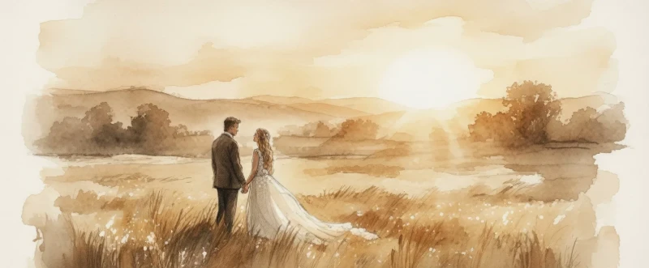
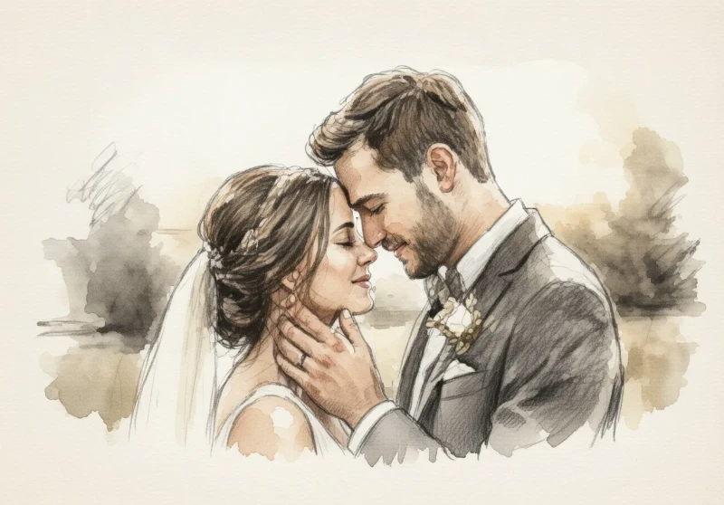
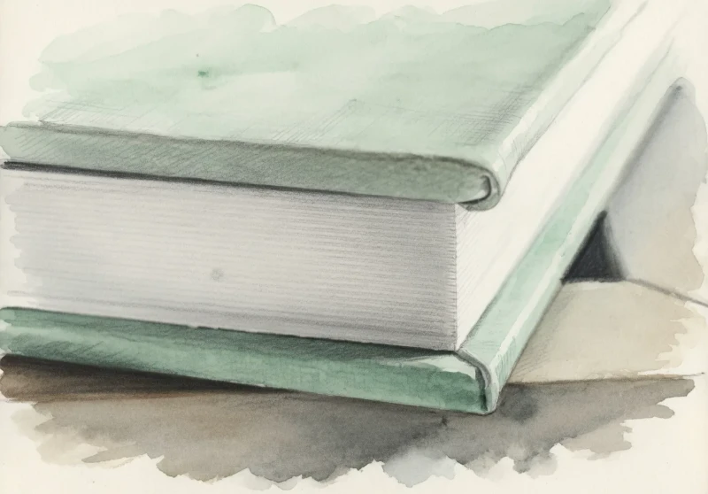
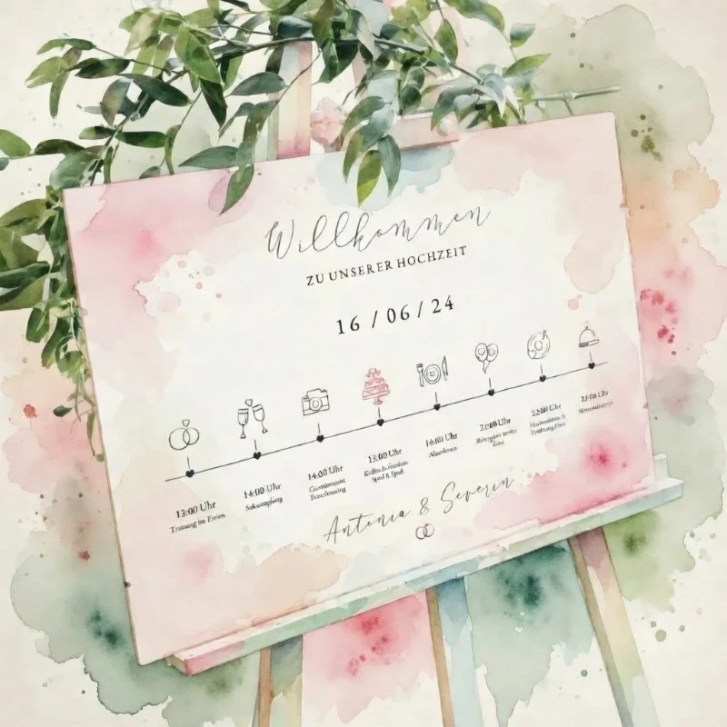

Ein kuratiertes Magazin über die Liebe, das Licht und wertvolle Tipps für eure Hochzeitsplanung in Kassel und Umgebung — von Herzen geschrieben, aus über 13 Jahren Erfahrung als Hochzeitsfotografin.

Das goldene Licht, das alles in einen sanften Schleier hüllt. Warum das Timing an eurem Hochzeitstag über die Güte eurer Bilder entscheidet — und wie ihr die schönsten Momente im warmen Abendlicht einfangt.
WeiterlesenEin digitales Bild ist flüchtig, ein handgefertigtes Album ist ein Erbstück für Generationen. Warum es sich lohnt, eure Geschichte in etwas Bleibendem festzuhalten.
Zum GuideBarocke Eleganz, Karlsaue-Licht und Räume für bis zu 300 Gäste — alles was ihr über die Orangerie als Hochzeitslocation wissen müsst.
Zum Guide
Wie ihr euch vor der Kamera wohlfühlt und wir gemeinsam echte, ungestellte Momente in Kassel kreieren.
Zum Guide
Ein digitales Bild ist flüchtig, ein handgefertigtes Album ist ein Erbstück für Generationen.
Zum Guide
Ein entspannter Tag beginnt mit einer klugen Planung. Wir schauen uns an, wie viel Zeit ihr für welche Momente braucht.
Zum Guide Planning GuideDas goldene Licht, das alles in einen sanften Schleier hüllt — warum das Timing an eurem Hochzeitstag über die Schönheit eurer Bilder entscheidet.
WeiterlesenSucht ihr eine Hochzeitsfotografin, die die leisen Zwischentöne und echten Emotionen eures wichtigsten Tages einfängt? Ich begleite euch in Kassel und in Hessen & Niedersachsen.
Kontakt aufnehmen